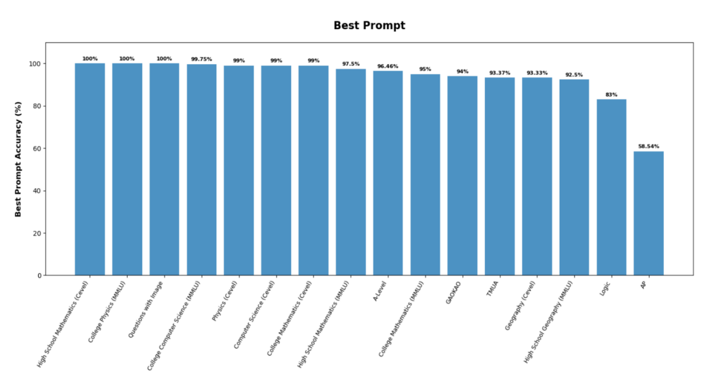

How well do language models handle standardized exams?
A comparative study of model reliability, prompt design, and the errors that matter in educational assessment.
Read the research ↗I study and build technology that helps people learn, connect, and feel supported.
My work brings together human-computer interaction, education technology, and thoughtful uses of AI.
Selected research

A comparative study of model reliability, prompt design, and the errors that matter in educational assessment.
Read the research ↗
A study of academic, lifestyle, and psychological patterns, with care taken to frame prediction as support for people.
Read the research ↗Selected projects
An AI-supported space for self-assessment, questions, and reflection, informed by research with more than 400 individuals.
Visit platform ↗An agent-based approach to attack simulation, vulnerability assessment, and security reporting.
See project ↗A hands-on exploration of hardware, control logic, and open-water testing.
See project ↗A little about me
I’m a Computer Science + Education student at UIUC. I care about how people experience technology, especially when it shapes learning, communication, and well-being.
Contact